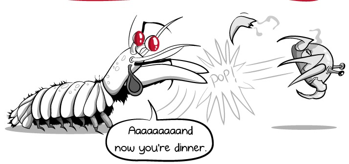

O seu nome científico é Odontodactylus scyllarus, em abril de 1998, uma criatura agressiva chamada Tyson esmagou a parede de vidro de um quarto de polegada de espessura de sua cela. Ele logo foi subjugado por atendentes nervosos e mudou-se para uma instalação mais segura em Great Yarmouth. Ao contrário de seu homônimo peso-pesado, Tyson tinha apenas dez centímetros de comprimento. Mas os cientistas descobriram recentemente que Tyson, como todos os seus parentes, pode dar um dos golpes mais rápidos e poderosos da natureza. Ele era um camarão mantis.
Duvidam ainda do quão forte é este animal ?
A água é muito mais densa que o ar e mesmo o artista marcial mais rápido teria uma dificuldade considerável para socá-la. E, no entanto, o camarão mantis termina seu ataque em menos de três milésimos de segundo, superando até mesmo seu homônimo que vive na terra.
Os camarões louva-a-deus são parentes agressivos de caranguejos e lagostas e atacam outros animais, paralisando-os com golpes devastadores. Suas armas secretas são um par de braços articulados dobrados sob a cabeça, que eles podem desenrolar em velocidades incríveis.
Propaganda!
Estes são inofensivos
Venha comprar Seu camarão Pistola
Aqui !| Reino | Animalia |
| Filo | Arthropoda |
| Subfilo | Crustacea |
| Classe | Malacostraca |
| Subclasse | Hoplocarida |